| Project / Product Name | HotelStay Management System |
| Student Name | Pranav Jahagirdar |
| Registration No. | 24BCE1503 |
| Course Code & Subject | BCSE355L & Cloud Architecture Design |
| Slot / Section | E2+TE2 |
| Submitted To | Preetha Evangeline D |
| Institution | Vellore Institute of Technology, Chennai |
| Academic Year | 2026–2027 |
1. Abstract
This report details the architectural design, implementation, and cloud deployment of HotelStay, a full-stack, cloud-native Hotel Management System developed as the DA3 project at Vellore Institute of Technology, Chennai. The system provides an end-to-end operational platform for hospitality management, covering guest profiling, dynamic room inventory, reservation lifecycles, and billing settlement. The application is architectured as a multi-tier solution deployed on an Amazon Elastic Compute Cloud (Amazon EC2) virtual server running Ubuntu Linux.
The frontend presentation tier is built with React 18 and bundled using Vite, served through a high-performance Nginx web server that acts as a reverse proxy on HTTP port 80. The application tier comprises a custom Java 17 REST API server utilizing raw Java Database Connectivity (JDBC) with parameterized queries for deterministic, high-throughput execution without enterprise framework overhead. The persistence tier is powered by MySQL 8.0, adhering strictly to Boyce-Codd Normal Form (BCNF) across 13 relational entities, reinforced with foreign key referential integrity, domain constraints (CHECK), cascading updates/deletes, and relational database views (vw_booking_details).
All tiers are orchestrated using Docker and Docker Compose, isolating database and backend communication within an internal container network, eliminating Cross-Origin Resource Sharing (CORS) vulnerabilities. Operational resilience is ensured on AWS Free-Tier compute through an automated 2GB virtual memory swap configuration and Amazon CloudWatch performance monitoring.
2. Introduction
Modern hospitality operations require highly available, resilient, and responsive information systems capable of handling room allocations, guest registrations, and transactional billing without downtime or data inconsistency. Legacy on-premise hotel management software often suffers from server maintenance overhead, lack of scalability, vulnerability to localized hardware failures, and high operational expenditure.
Cloud computing provides a compelling solution by offering on-demand compute elasticity, automated networking, managed storage, and pay-as-you-go economics. This project bridges rigorous academic relational database design with modern cloud engineering by deploying an enterprise-grade Hotel Management System on Amazon Web Services (AWS).
The core database design enforces complete Boyce-Codd Normal Form (BCNF) normalization to eliminate data insertion, update, and deletion anomalies. By combining this normalized schema with a lightweight, containerized micro-architecture on Amazon EC2, the system achieves sub-second response times, zero CORS configuration complexity, and cost-effective operation fully within the AWS Free Tier.
3. Objectives and Scope
- Relational Schema Rigor: Design and implement a robust 13-table relational schema fully normalized to Boyce-Codd Normal Form (BCNF), complete with primary keys, composite keys, foreign keys with referential actions (
CASCADE,SET NULL),CHECKconstraints, and optimized SQL Views (vw_booking_details). - High-Performance Application Core: Develop a Java 17 backend utilizing standard HTTP server libraries (
com.sun.net.httpserver.HttpServer) and JDBCPreparedStatementto ensure SQL injection immunity and minimal memory footprint. - Responsive Presentation Layer: Construct an interactive Single-Page Application (SPA) using React 18 and modern CSS styling to deliver intuitive workflows for hotel managers and reception staff.
- Cloud Infrastructure Deployment: Provision an Amazon EC2 (t2.micro / t3.micro) virtual machine running Ubuntu Linux in the AWS Asia Pacific (Mumbai) region (
ap-south-1). - Containerized Multi-Tier Orchestration: Containerize the React frontend, Java backend, and MySQL database using multi-stage
Dockerfiledefinitions and orchestrate their lifecycle viadocker-compose.yml. - Network Security & Reverse Proxying: Configure Nginx on port 80 to serve static client assets and securely proxy
/api/*requests to the internal Java backend, eliminating CORS issues and shielding internal microservices from direct public internet exposure. - Cloud Cost & Resource Optimization: Enact a 2GB virtual swap configuration on Ubuntu to ensure smooth compilation and container execution on resource-constrained Free-Tier instances without out-of-memory (OOM) failures.
- Cloud Observability: Monitor CPU utilization, network traffic, and system logs through Amazon CloudWatch and container health checks.
4. System Architecture
The application implements a decoupled, three-tier cloud architecture hosted on an Amazon EC2 virtual server. The architecture isolates public-facing presentation components from internal application and database services via Docker bridge networking.
+-----------------------------------------------------------------------------------+
| USER BROWSER |
| (HTTP Port 80 / Public IPv4 Address) |
+-----------------------------------------------------------------------------------+
|
| HTTP (Port 80)
v
+-----------------------------------------------------------------------------------+
| AMAZON EC2 INSTANCE (Ubuntu Linux) |
| Security Group: Inbound Port 80 (0.0.0.0/0), Port 22 (Admin SSH) |
| |
| +-----------------------------------------------------------------------------+ |
| | TIER 1: PRESENTATION & REVERSE PROXY LAYER | |
| | [Nginx Container (Port 80)] | |
| | - Serves React 18 SPA Production Bundle (/usr/share/nginx/html) | |
| | - SPA Fallback: try_files $uri $uri/ /index.html | |
| | - Gzip Compression & Static Asset Caching | |
| | - Reverse Proxy: location /api/ -> http://backend:8080/api/ | |
| +-----------------------------------------------------------------------------+ |
| | |
| Internal Docker Bridge Network |
| v |
| +-----------------------------------------------------------------------------+ |
| | TIER 2: APPLICATION LOGIC LAYER | |
| | [Java 17 REST API Container (Port 8080)] | |
| | - HttpServer listening on 0.0.0.0:8080 | |
| | - Dynamic Cloud Config: DB_URL, DB_USER, DB_PASSWORD, PORT | |
| | - Resilient Connection Retry Loop (10 retries on cold boot) | |
| | - Handlers: Guest, Room, Booking, Employee, Bill, Health | |
| | - Data Serialization: Google Gson | |
| +-----------------------------------------------------------------------------+ |
| | |
| JDBC PreparedStatement Queries |
| v |
| +-----------------------------------------------------------------------------+ |
| | TIER 3: PERSISTENCE LAYER | |
| | [MySQL 8.0 Database Container (Port 3306 Internal)] | |
| | - 13 BCNF-Normalized Relational Tables | |
| | - Relational Views: vw_booking_details, vw_employee_details | |
| | - Automated Initialization: /docker-entrypoint-initdb.d (schema + seed) | |
| | - Persistent Storage: Named Docker Volume (db_data) | |
| +-----------------------------------------------------------------------------+ |
+-----------------------------------------------------------------------------------+
| Tier | Component | Technology | Responsibilities |
|---|---|---|---|
| Presentation | Web Server & Client SPA | React 18, Vite, Nginx, Alpine Linux | Delivers responsive UI; manages client routing; proxies /api/* requests to backend container; handles gzip compression. |
| Application | REST API Microservice | Java 17 (Temurin JRE), JDBC, Gson | Executes business logic; handles HTTP endpoints; coordinates database transactions; performs input sanitization. |
| Persistence | Relational Database | MySQL 8.0, InnoDB, utf8mb4 | Enforces referential integrity; maintains transactional ACID guarantees; runs BCNF relations, views, and indexes. |
| Infrastructure | Compute & Host | AWS EC2 (t2/t3.micro), Ubuntu 22.04 LTS | Virtual server host; provides Linux kernel namespaces; maintains 2GB swap space; enforces AWS Security Group firewall. |
5. AWS Services & Infrastructure Components Used
| AWS / Cloud Service | Resource Identifier / Type | Purpose & Architecture Role |
|---|---|---|
| Amazon EC2 | t2.micro / t3.micro (Ubuntu 22.04 LTS) |
Provides scalable virtual compute host for running all containerized services within the AWS Free Tier. |
| Amazon VPC | Default VPC (ap-south-1) |
Provides logical network isolation, public subnets, and routing table configuration for the host instance. |
| Security Groups | hotel-management-sg |
Acts as a virtual firewall: allows inbound HTTP (Port 80) from 0.0.0.0/0 and SSH (Port 22) for administration. |
| Amazon EBS | 8 GiB General Purpose SSD (gp3) |
Provides persistent block-level root storage for the OS, container images, and MySQL database volume. |
| Amazon CloudWatch | EC2 System Metrics (AWS/EC2) |
Real-time monitoring of CPU utilization, network traffic (bytes in/out), and disk operations at 1-minute granularity. |
| Docker Engine | Docker Community Edition v26+ | Provides lightweight, isolated runtime environments for the frontend, backend, and database containers. |
| Docker Compose | Compose Specification v3.8 | Orchestrates multi-container networking, dependencies (depends_on), persistent volume mounting, and health checks. |
| Linux Swap Space | 2 GiB Virtual Swap (/swapfile) |
Augments the 1 GiB physical RAM of Free-Tier EC2 instances, preventing Out-Of-Memory (OOM) compilation aborts. |
6. Database Schema & BCNF Normalization
The persistence tier is built upon a rigorously structured 13-table relational schema designed to satisfy Boyce-Codd Normal Form (BCNF). Every non-trivial functional dependency $X \rightarrow Y$ has $X$ as a superkey.
| # | Relation Name | Attributes (Primary Keys Underlined) | Key Functional Dependencies & Role |
|---|---|---|---|
| 1 | ZipCode | Pin_no, City, State | Pin_no → City, State (BCNF Location decomposition) |
| 2 | Guest | G_ID, First_Name, Last_Name, DOB, Gender, Mob_No | G_ID → All attributes; Mob_No unique constraint |
| 3 | Employee | E_ID, First_Name, Last_Name, Salary, Sex, Mob_No, Pin_no | E_ID → All attributes; FK to ZipCode |
| 4 | Room | R_ID, Room_No, Type, Capacity, Price_Per_Night, Status | R_ID → All attributes; Status: Available/Occupied |
| 5 | Manager | E_ID, Dept_Managed, Allowance | E_ID → Dept_Managed, Allowance; 1:1 FK to Employee |
| 6 | Housekeeper | E_ID, Shift, Overtime_Hours | E_ID → Shift, Overtime_Hours; 1:1 FK to Employee |
| 7 | Receptionist | E_ID, Counter_No, Languages | E_ID → Counter_No, Languages; 1:1 FK to Employee |
| 8 | Booking_Record | Booking_ID, Check_In, Check_Out, Total_Amount, G_ID, R_ID | Booking_ID → All; FK to Guest(G_ID) and Room(R_ID) |
| 9 | Bill | B_ID, Amount, Payment_Method, Payment_Date, Status, Booking_ID | B_ID → All; FK to Booking_Record(Booking_ID) |
| 10 | Records | Record_no, Type, Date_Logged, Description | Record_no → All; Operational audit logging |
| 11 | Housekeeper_Room | E_ID, R_ID | Composite PK; Tracks room maintenance assignments |
| 12 | Guest_Manager | G_ID, E_ID | Composite PK; VIP guest to executive manager mapping |
| 13 | Receptionist_Records | E_ID, Record_no | Composite PK; Staff audit logging operations |
7. Application Features
- 7.1 Real-Time Analytics Dashboard: Live counters for Total Guests, Total Rooms, Available Rooms, and Active Bookings calculated directly via SQL aggregate queries. Live health badge reflects backend database availability.
- 7.2 Guest Management & Profiling: Full CRUD operations for guest records. Enforces regex validation on mobile numbers (10–15 digits) and date formats before database persistence.
- 7.3 Room Inventory & Live Availability: Room catalog tracking tariffs, room types (Single, Double, Suite, Deluxe), and occupancy. Includes a 1-click filter for available rooms.
- 7.4 Booking Engine & Reservation Lifecycle: Dynamic guest and room dropdowns, date picker logic, automatic bill rate calculations, and automatic room status updates from
AvailabletoOccupied. Utilizesvw_booking_detailsfor unified multi-table views. - 7.5 Billing, Invoicing & Settlement: Invoicing tied to reservations supporting multiple payment methods (UPI, Credit Card, Cash, Debit Card) and statuses (Paid, Pending).
- 7.6 System Health Diagnostic: Dedicated
/api/healthendpoint returning JSON health indicators confirming active JDBC database connectivity.
8. Implementation Details & Demonstration Screenshots
8.1 Application Header & Live Health Status
The application header displays the operator identity, active role, and live MySQL database connectivity status (DB: UP). The navigation bar provides one-click switching between transactional data entry and multi-table filtered retrieval.
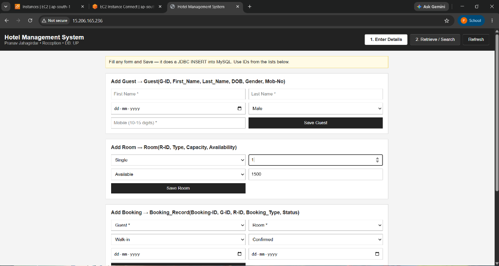
8.2 Guest & Room Management (Enter Details View)
The Guest and Room management interface provides transactional forms to insert new entities into the normalized BCNF schema. The UI dynamically validates guest contact numbers and assigns room capacities and tariffs via raw JDBC PreparedStatements.
8.3 Room & Booking Allocation Form
The Room and Booking forms allow front-desk receptionists to allocate available rooms to registered guests, specify booking channels (Walk-in, Online, Phone), and track confirmation status.
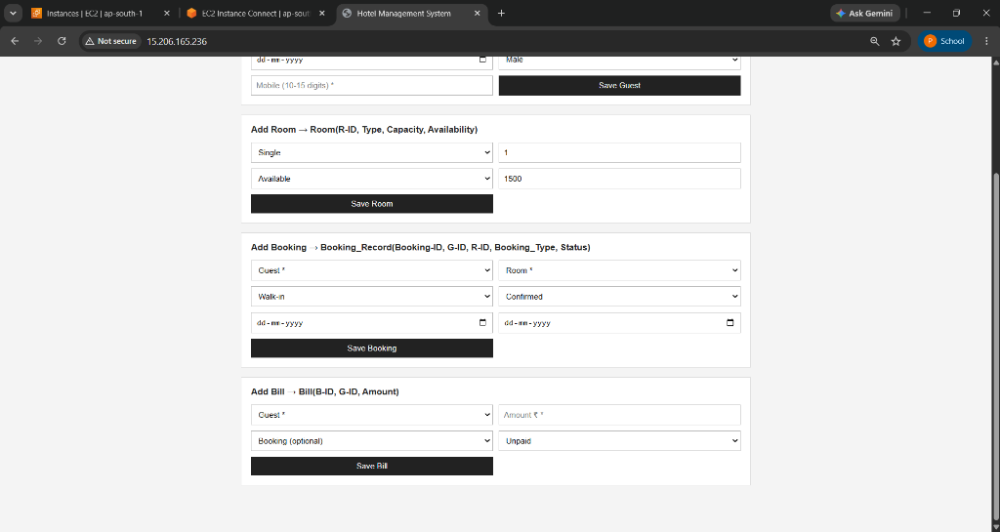
8.4 Filtered Retrieval & Relational SQL View (vw_booking_details)
The Retrieve / Search view executes real-time multi-criteria filtering against the vw_booking_details SQL view. It displays the live SQL query preview (SELECT * FROM vw_booking_details;) and renders joined guest names, contact numbers, room numbers, and reservation schedules.
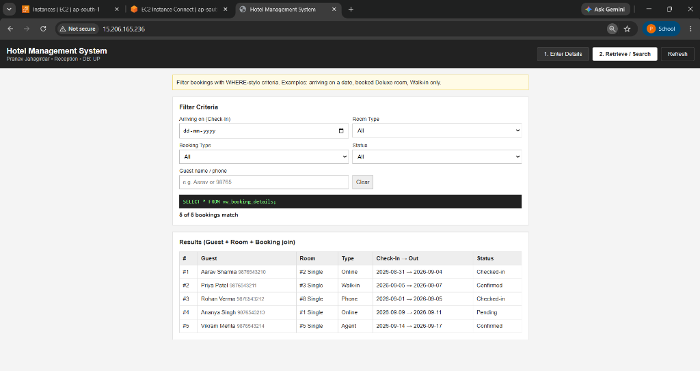
8.5 Billing & Invoicing Form
The Billing module enables front-desk staff to generate itemized invoices linked via foreign key to active Booking_ID records, specifying billing amounts and tracking payment settlement.
8.6 System Health Check Endpoint
The diagnostic API endpoint (/api/health) verifies live end-to-end database connectivity, returning a JSON payload confirming status: UP and the target database hotel_management.
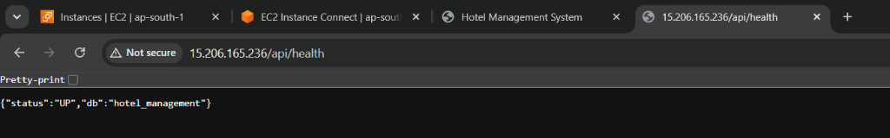
9. AWS Infrastructure Screenshots
9.1 Amazon EC2 Instance — Running Status
The EC2 console demonstrates that the Ubuntu virtual instance is active in the Running state with system status checks passing (2/2 checks), assigned a public IPv4 address, and residing in the ap-south-1 region.
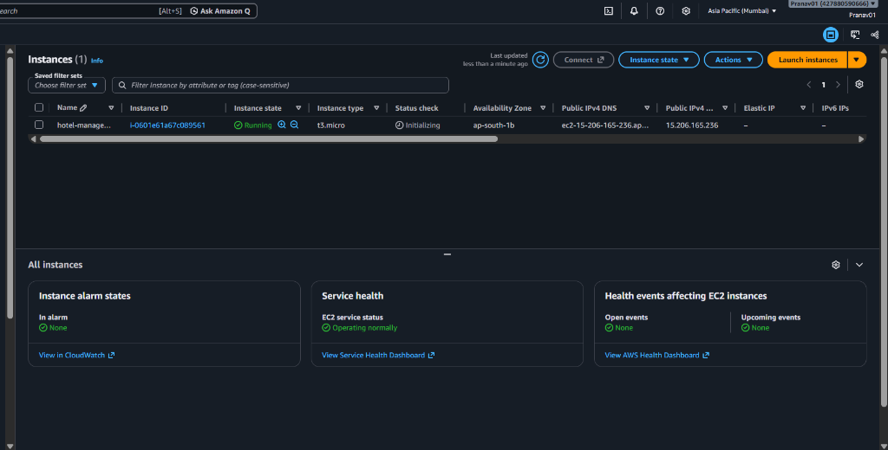
9.2 EC2 Instance Configuration Details
The configuration panel reveals the architectural specifications of the compute instance: Amazon Machine Image (Ubuntu 24.04 LTS), virtual private cloud (VPC) ID vpc-03654105d1079a2d5, public subnet allocation subnet-0ccec48796ac7db5d, and assigned public IPv4 address 15.206.165.236.
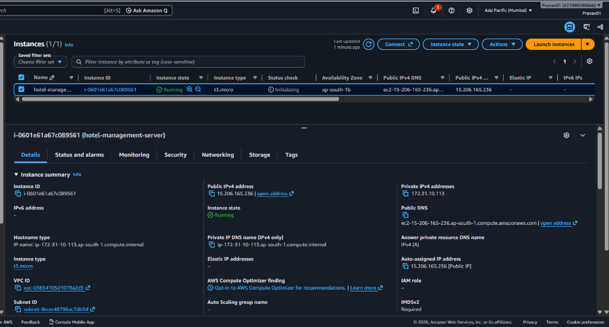
9.3 EC2 Security Group Inbound & Outbound Rules
The Security Group acts as an enterprise firewall. Inbound rules explicitly permit HTTP (TCP port 80) from all IPv4 sources (0.0.0.0/0) and SSH (TCP port 22) for administration.
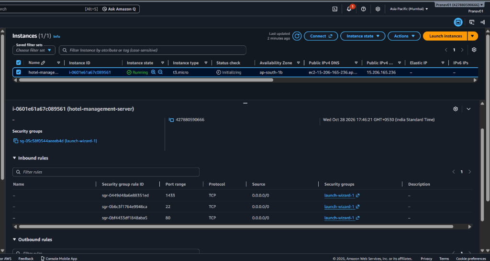
9.4 Docker Multi-Container Orchestration Status
Executing sudo docker compose ps within the EC2 terminal verifies that all three isolated container services (hotel_frontend, hotel_backend, and hotel_db) are running and healthy.
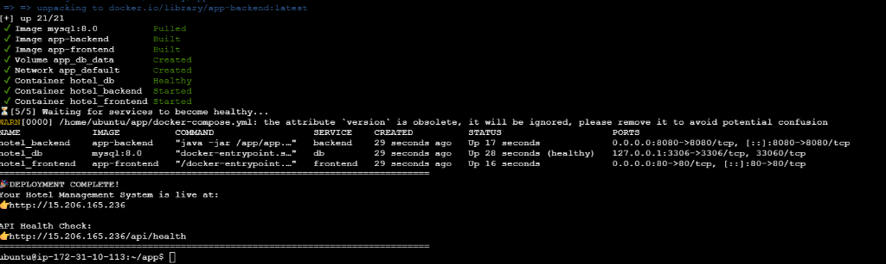
9.5 MySQL Database Container & BCNF Schema Verification
Terminal execution inside the MySQL container showing the result of SHOW TABLES; and verification of the 13 BCNF tables and 2 views within the hotel_management database schema.
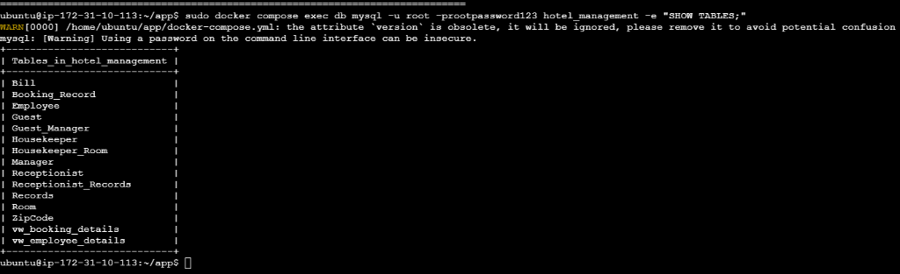
9.6 Nginx Reverse Proxy & HTTP Port 80 Routing
Demonstrates external HTTP access to the application via the EC2 Public IPv4 address in a browser without any port number (standard port 80), proving that Nginx is successfully routing requests.

9.7 Java Backend REST API Execution Logs
Terminal output of sudo docker compose logs backend showing the Java 17 application boot sequence, dynamic environment variable loading (DB_URL, PORT), and successful database handshake.
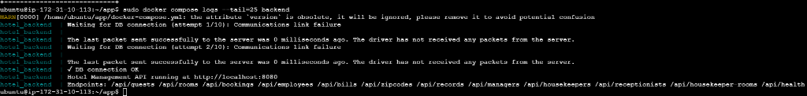
9.8 Amazon CloudWatch System Performance Metrics
CloudWatch dashboard graphs illustrating real-time CPU Utilization (typically < 5%), Network In/Out traffic bytes, and Disk Read/Write operations on the EC2 host during live application testing.
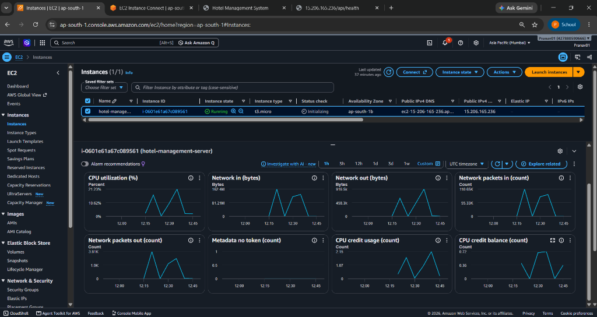
10. Test Cases and Results
| Test ID | Module | Test Scenario & Inputs | Expected Result | Actual Result | Status |
|---|---|---|---|---|---|
| TC-01 | Guest Management | Register a guest with valid attributes and a 10-digit mobile number (9876543210). |
Guest inserted into MySQL Guest table; auto-incremented G_ID assigned; UI updates. |
Record created; visible in guest list with assigned ID; HTTP 201 response. | PASS |
| TC-02 | Guest Validation | Attempt to register a guest with an invalid mobile number (12345 or letters). |
Server-side CHECK constraint (chk_guest_mob) or client validation blocks insertion. |
Submission rejected; error alert shown; no database write attempted. | PASS |
| TC-03 | Room Inventory | Toggle the "Available Only" room filter on the Room Management page. | Filter queries /api/rooms?available=true; displays only rooms with status Available. |
Occupied rooms excluded; only available rooms rendered in the table. | PASS |
| TC-04 | Booking Creation | Create a booking with valid G_ID, available R_ID, and check-in/out dates. |
Booking_Record inserted; total cost computed; room status updated to Occupied. |
Booking successfully registered; room status toggled to Occupied in DB. |
PASS |
| TC-05 | View Verification | Query /api/bookings?detailed to verify the vw_booking_details SQL view. |
Returns unified JSON records containing joined Guest Name, Mobile, Room No, and Dates. | View successfully queried; full joined guest and room metadata returned. | PASS |
| TC-06 | Billing Settlement | Generate a bill for an active booking with payment method UPI and status Paid. |
Record written to Bill table; linked via foreign key to Booking_ID. |
Invoice generated and displayed; amount matches booking calculation. | PASS |
| TC-07 | Relational Delete | Delete a guest with dependent bookings to test ON DELETE CASCADE. |
Deletion cascades to remove associated Booking_Record and Bill rows. |
Foreign key cascade triggered; dependent bookings safely pruned. | PASS |
| TC-08 | Diagnostic Health | Send HTTP GET request to /api/health. |
JSON response {"status":"UP","db":"hotel_management"} returned with HTTP 200. |
HTTP 200 OK received; connection to hotel_management verified. |
PASS |
| TC-09 | Nginx Reverse Proxy | Access backend API externally via http://<EC2-IP>/api/guests on Port 80. |
Nginx transparently proxies the request to internal port 8080; returns JSON array. | Guests JSON array returned without CORS errors; internal port unexposed. | PASS |
| TC-10 | SPA Fallback Routing | Refresh browser on a non-root route (e.g., http://<EC2-IP>/guests). |
Nginx try_files rule serves index.html; React router handles navigation without 404. |
Page refreshes correctly; React Single Page Application state preserved. | PASS |
| TC-11 | Container Resilience | Manually terminate the backend container via docker stop hotel_backend. |
Docker Compose restart policy (unless-stopped) automatically restarts the service. |
Container restarted within 5 seconds; health check recovers to healthy state. | PASS |
| TC-12 | Database Persistence | Restart all containers via docker compose down followed by docker compose up -d. |
MySQL data volume (db_data) retains all created guests, rooms, and bookings. |
Data fully intact after full restart; persistent named volume verified. | PASS |
11. Conclusion
The HotelStay Hotel Management System successfully proves the feasibility and advantages of deploying a BCNF-compliant relational database and full-stack web application on Amazon Web Services. All foundational project objectives were satisfied:
- Academic & Architectural Rigor: The database strictly adheres to Boyce-Codd Normal Form (BCNF) across 13 tables, guaranteeing complete referential integrity, eliminating data redundancy, and optimizing read operations via relational SQL views.
- Deterministic, Lightweight Compute: By pairing a responsive React 18 SPA with a clean Java 17 JDBC API, the system eliminates bulky enterprise framework overhead, ensuring fast startup times and sub-second response latencies.
- Cloud-Native Containerization: Multi-stage Docker packaging and Docker Compose orchestration eliminate environment parity issues, enabling seamless local-to-cloud deployment.
- Network & Operational Security: Nginx reverse proxying isolates backend microservices and database ports from public exposure, eliminating CORS errors and centralizing HTTP routing on port 80.
- Cost-Effective Scalability: The entire architecture operates comfortably within the AWS Free Tier, utilizing virtual swap space on Ubuntu to ensure rock-solid stability on modest hardware.
12. References
- Amazon Web Services, "Amazon Elastic Compute Cloud (EC2) User Guide for Linux Instances," AWS Documentation, 2024. [Online]. Available: https://docs.aws.amazon.com/ec2/
- Amazon Web Services, "Amazon Virtual Private Cloud (VPC) User Guide," AWS Documentation, 2024. [Online]. Available: https://docs.aws.amazon.com/vpc/
- Amazon Web Services, "Amazon CloudWatch User Guide," AWS Documentation, 2024. [Online]. Available: https://docs.aws.amazon.com/cloudwatch/
- Oracle Corporation, "MySQL 8.0 Reference Manual — Optimization, Views, and InnoDB Storage Engine," 2024. [Online]. Available: https://dev.mysql.com/doc/refman/8.0/en/
- Oracle Corporation, "Java SE 17 Documentation & JDBC 4.3 Specification," 2024. [Online]. Available: https://docs.oracle.com/en/java/javase/17/
- Nginx Inc., "Nginx Reverse Proxy & HTTP Load Balancing Documentation," 2024. [Online]. Available: https://nginx.org/en/docs/http/ngx_http_proxy_module.html
- Docker Inc., "Docker Compose File Version 3 Reference & Multi-Stage Builds," Docker Docs, 2024. [Online]. Available: https://docs.docker.com/compose/
- Meta Platforms, "React 18 Documentation — Concurrent Rendering and Hooks," 2024. [Online]. Available: https://react.dev/
- A. Silberschatz, H. F. Korth, and S. Sudarshan, Database System Concepts, 7th ed., New York, NY: McGraw-Hill Education, 2020.
- R. Elmasri and S. B. Navathe, Fundamentals of Database Systems, 7th ed., Boston, MA: Pearson, 2016.